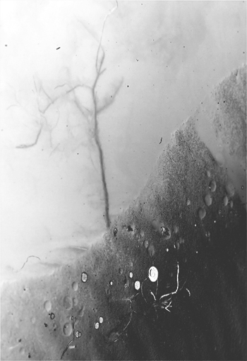

Who Calls Its Children To Their Altars
by Geoff McLain
Turn the deadbolt. Turn it back. Again.
The brass clack clack is the word for safe
but nothing is safe. The bolt was never proof;
you’ve always known exactly how the monsters could get in.
Turn the hallway light off and on and off.
The part of you that thinks, and knows the names and causes,
knows the door is locked, and wishes you would stop.
Underneath that is where another you rises.
It makes your hands priest through the ritual phrases.
It takes all your reasons to come out on top.
Later, when you wake, because the lights are on the walls,
you will wait until the shadows have returned to what they are.
You need to breathe deep when the nails are on the sills,
and remember what the darkness is until the darkness fails
though the darkness will win. Faith is a star -
but even stars, they say, are bones, whose hearts,
whose perfect burning hearts are long ago dead,
and all we have of them is what the mirror reports,
though we stare into their deaths until the pilgrim glass converts.
The darkness waits patiently until the stars are bled.
You can hear the dead stars falling through the leaves.
Get up and check the lock, and slide the bolt back,
and rack the brass bolt back and forth through its grooves,
take it through its tricks until the angel arrives.
There is nothing safe and prayer is clack clack.

 |
|